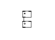
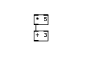
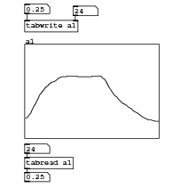

Code examples for “Designing Sound” textbook
Chapter 9: Starting With Pure Data
Object placement on canvas
#N canvas 238 632 144 90 10; #X obj 60 22 *; #X obj 60 49 +;
Download basics1.pd.
Connecting objects

#N canvas 236 405 144 104 10; #X obj 59 55 +; #X obj 59 28 *; #X connect 1 0 0 0;
Download basics2.pd.
Changing object parameters

#N canvas 239 196 143 94 10; #X obj 56 23 * 5; #X obj 56 50 + 3; #X connect 0 0 1 0;
Download basics3.pd.
Numerical input
#N canvas 236 50 148 107 10; #X floatatom 48 8 5 0 0 0 - - -; #X floatatom 48 84 5 0 0 0 - - -; #X obj 48 32 * 5; #X obj 48 59 + 3; #X connect 0 0 2 0; #X connect 2 0 3 0; #X connect 3 0 1 0;
Download basics4.pd.
Tables/Arrays

#N canvas 120 90 276 286 10; #N canvas 0 0 450 300 graph2 0; #X array a1 100 float 1; #A 0 -0.577121 -0.562835 -0.534264 -0.491407 -0.462835 -0.419978 -0.362835 -0.305693 -0.262836 -0.205693 -0.14855 -0.08 -0.0485503 -0.00569324 0.0228781 0.0657352 0.0943066 0.108592 0.151449 0.165735 0.194306 0.194306 0.208592 0.222878 0.25 0.280021 0.294306 0.308592 0.308592 0.308592 0.308592 0.322878 0.322878 0.322878 0.322878 0.322878 0.322878 0.322878 0.322878 0.308592 0.308592 0.308592 0.308592 0.308592 0.308592 0.308592 0.308592 0.308592 0.308592 0.308592 0.322878 0.322878 0.322878 0.322878 0.322878 0.322878 0.322878 0.294306 0.265735 0.251449 0.208592 0.151449 0.0943066 0.0514495 0.00859244 -0.0342646 -0.0771217 -0.105693 -0.119979 -0.162836 -0.191407 -0.219979 -0.24855 -0.262836 -0.277121 -0.305693 -0.334264 -0.34855 -0.362835 -0.391407 -0.419978 -0.434264 -0.44855 -0.462835 -0.491407 -0.505692 -0.534264 -0.548549 -0.562835 -0.577121 -0.591406 -0.605692 -0.605692 -0.605692 -0.619978 -0.619978 -0.634263 -0.634263 -0.634263 -0.634263; #X coords 0 1 99 -1 200 140 1; #X restore -9 10 graph; #X floatatom -9 -49 5 0 0 0 - - -; #X floatatom 63 -46 5 0 0 0 - - -; #X floatatom -9 158 5 0 0 0 - - -; #X floatatom -9 200 5 0 0 0 - - -; #X obj -9 -25 tabwrite a1; #X obj -9 178 tabread a1; #X connect 1 0 5 0; #X connect 2 0 5 1; #X connect 3 0 6 0; #X connect 6 0 4 0;
Download arrays-tabreadwrite.pd.
- Index
- Chapters 9 to 14
- Introductory Pure Data
- 9: Starting with Pure Data
- 10: Using Pure Data
- 11: Pure Data Audio
- 12: Abstraction
- 13: Shaping Sound
- 14: Pure Data Essentials
- Chapters 17 to 21
- Techniques
- 17: Summation
- 18: Tables
- 19: Non-linear
- 20: Modulation
- 21: Granular Methods
- Practical Series 1
- Artificial Sounds
- 1: Pedestrian Crossing
- 2: Telephone Siganlling Tones
- 3: DTMF Dialling Tones
- 4: Alarm and Menu Sounds
- 5: Police Siren
- Practical Series 2
- Idiophonics
- 6: Telephone Bell
- 7: Bouncing Ball
- 8: Rolling Tin Can
- 9: Creaking Door
- 10: Boingy Sound
- Practical Series 3
- Nature
- 11: Fire
- 12: Bubbles
- 13: Running Water
- 14: Pouring
- 15: Rain
- 16: Electricity
- 17: Thunder
- 18: Wind
- Practical Series 4
- Machines
- 19: Switches
- 20: Clocks
- 21: Motors
- 22: Cars
- 23: Fans
- 24: Jet Engine
- 25: Helicopter
- Practical Series 5
- Practical Series 6
- Project Mayhem
- 30: Guns
- 31: Explosions
- 32: Rocket Launcher
- Practical Series 7
- Science Fiction
- 33: Transporter
- 34: R2D2
- 35: Red Alert